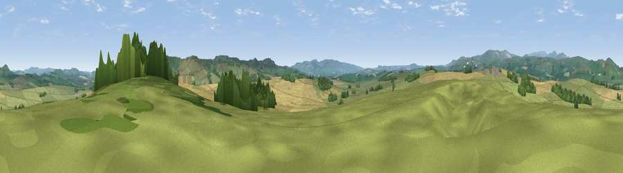

Viewpoint near Netherton
#13828 in England · top 48% of its area beats it · near Netherton · access?Where it is
The exact computed spot (NU 02925 09475). Click the marker for map links.
Public access: no public right of way or access land is recorded at this exact spot — it may be on private land. Computed from Natural England's CRoW access layer and OpenStreetMap rights of way — not the legal definitive map. Always verify locally.
The view, rendered

A 360° render of this exact spot computed from the terrain model, tree cover and land cover — summer colours, afternoon light, calibrated against photographs of famous viewpoints. Real trees, hedges and buildings will differ in detail.
The panorama
Grey silhouette: terrain skyline in each direction (720 bearings, Earth curvature and refraction included). Dashed green: skyline with trees (+15 m) and buildings (+8 m) as obstacles. Blue strip: how far the ground is visible on each bearing.
Where the view opens
Wedge length = distance to the farthest visible ground on that bearing (vegetation-aware). Rings at 10, 25 and 50 km.
What fills the view
64% grassland · 24% cropland · 12% woodland
Angular shares of the visible panorama (visual magnitude), not map area. Landscape diversity 0.39 (0–1 Shannon).
Key numbers
More beautiful places nearby
The staircase of upgrades: each row has a higher view potential than everything closer. Driving times are estimates from straight-line distance, calibrated against real road routing — check an actual route before setting out.
| Place | Direction | Drive | Score |
|---|---|---|---|
| Viewpoint near Whittingham | SE · 3 km | ~7 min | 63.0 |
| Viewpoint near Whittingham | E · 3 km | ~8 min | 77.5 |
| Long Crag | SE · 4 km | ~10 min | 80.5 |
| Viewpoint near Glanton | NE · 9 km | ~17 min | 82.9 |
| Viewpoint c12273_7856 | WNW · 11 km | ~21 min | 83.7 |
| Viewpoint near Eglingham | NNE · 13 km | ~24 min | 83.8 |
| Viewpoint c12396_7887 | NW · 13 km | ~24 min | 85.7 |
| Viewpoint near Chillingham | NNE · 17 km | ~29 min | 88.1 |
55.37924, -1.95539 · source: screening · position refined by local search. Computed location — check access rights before visiting.